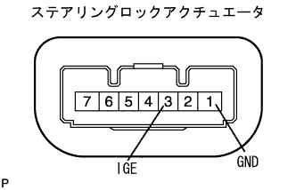
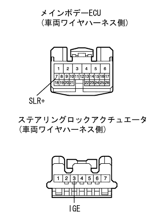

DTC B2782 Power Source ECU Malfunction |
| DTC No | DTC Detection Condition | Inspection Area |
|---|---|---|
| B2782 | Malfunction in power supply circuit to steering lock |
|
| Step 1 | Inspect Steering Lock ECU |
 |
Using SST (Toyota electrical tester), with the IG ON and IG OFF, shift lever in P and the door open, inspect the voltage between the terminals of the steering lock actuator.
| Tester Connection | Condition | Standard |
|---|---|---|
| 3(IGE) - 1(GND) | While lock motor is operating | 1 V or less |
| 3(IGE) - 1(GND) | While lock motor is stopped | 11 to 14 V |
|
| ||||
| OK | |
| Step 2 | Clear DTC |
Clear the DTCs using SST (TaSCAN).
| NEXT | |
| Step 3 | Recheck DTC |
Using SST (TaSCAN), turn the IG OFF → ON and recheck the DTCs.
| Result | Proceed to |
|---|---|
| Power source ECU malfunction code is not output | A |
| Power source ECU malfunction code is output | B |
)
|
| ||||
| A | ||
| ||
| Step 4 | Inspect Wire Harness and Connector (Main Body ECU - Steering Lock Actuator) |
 |
Disconnect the steering lock actuator connector and connector V of the main body ECU.
Check that the connector cases and terminals are not deformed or corroded.
Using SST (Toyota electrical tester), measure the resistance between the wire harness side connector of the steering lock actuator and wire harness side connector V of the main body ECU.
| Tester Connection | Condition | Standard |
|---|---|---|
| 3(IGE) - V7(SLR+) | Always | Below 1 Ω |
| 3 (IGE) - Body ground | Always | 10 kΩ or higher |
|
| ||||
| OK | ||
| ||